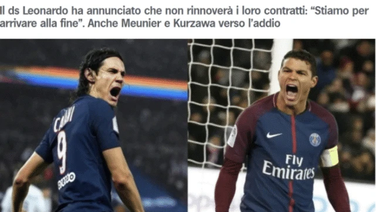
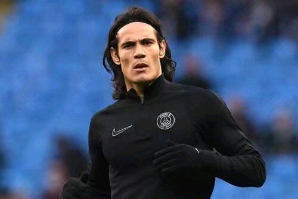
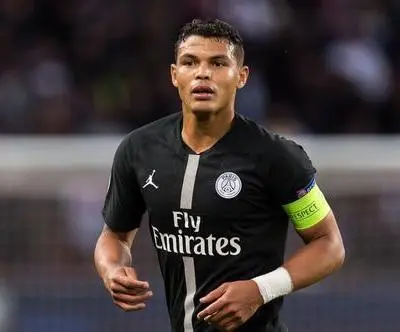

懂英超 2020-06-14
就在欧洲各大联赛相继重启时，已经宣布取消赛季的法甲却突然弄出了大新闻，成功卫冕联赛冠军的大巴黎确认，队中的两名功勋老将卡瓦尼和蒂亚戈-席尔瓦将在今夏离队。
俱乐部体育总监莱昂纳多透露：“我们计划将卡瓦尼和蒂亚戈-席尔瓦留至8月底，他们会和我们战到最后。”原本两人的合同都将在今夏6月30日结束，虽然法甲赛季已经取消，但随后欧冠联赛将会重启，所以目前球队与他们谈好了条件，留到8月份踢完所有的欧冠赛事，他们就将彻底告别。
两名南美球星分别在巴黎效力了7个赛季与8个赛季，一直都是球队的绝对核心。但目前卡瓦尼已经34岁，而席尔瓦更是35岁，年龄问题成为他们离开的最大因素。作为队史第一射手王的卡瓦尼，目前已经为球队打进了200球，虽然年纪渐大但依旧不缺下家，目前国米与马竞都在与他进行谈判。最近巴黎也为卡瓦尼找好了替身，从国米以5800万欧引进意甲金靴伊卡尔迪。
至于老队长席尔瓦，此前他曾透露自己将继续留在欧洲效力，并拒绝了巴甲球队的邀请。巴西球星的下一站极可能是加盟英超，据悉昔日恩师安切洛蒂希望将蒂亚戈-席尔瓦带到埃弗顿，他相信弟媳的冠军经验会给球队带来好处，另外英超的中资球队狼队同样对席尔瓦感兴趣，鉴于目前狼队也同时在与武磊传绯闻，不知道两者会不会在英超成为队友。